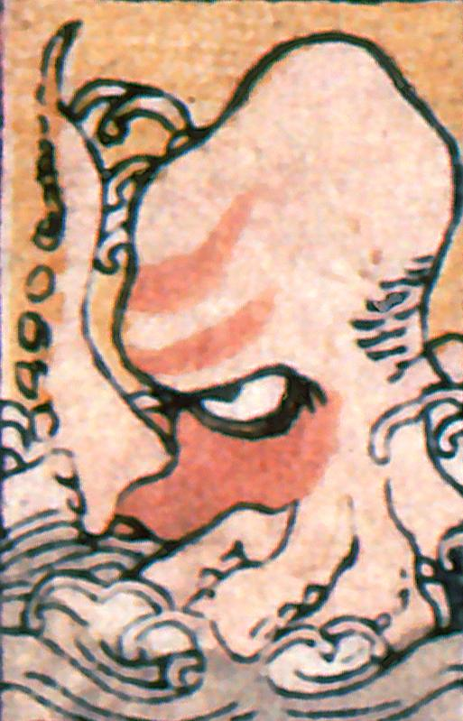

← 图鉴索引

海原に出現した巨大な蛸。1本の足を上げている。
著作者：叢豊丸／出典：親書誌：A5_pushkin_0018：新板化物尽；シンバンバケモノツクシ／日付：2011／資源識別子：A5_pushkin_0018_0006_0000
Copyright (c)2010- International Research Center for Japanese Studies, Kyoto, Japan. All rights reserved.